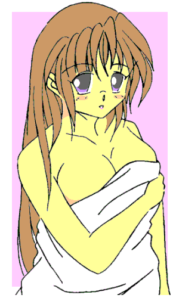

ああっ、女神さまっ
よっすぃー ： 作
「女神です」
目の前の女にいきなり電波なセリフを投げつけられた。
空腹で道端でうずくまっていたところを気まぐれに声をかけたら思いのほか美人だったので、飯をおごってやって、その見返りにホテルに行って（自主規制）の余韻に浸っているときに、いきなりそんな事をぬかしたのだ。
「おぃおぃ、冗談は休み休みに言えよ」
「冗談でありません。私は女神です」
うわーっ……オレ、ひょっとして、見かけの良さに騙されてとんでもねーのを拾っちまったか……
「いいえ。とんでもないどころか、女神に功徳を与えたあなたはとてつもない幸運の持ち主です」
どこがだ！ 加えてオレの表情を読むんじゃない！
女はしゃあしゃあと言うが、こんな場所で素っ裸のネーチャンに「私は女神です」などと言われても説得力なんかまるでない。
「そう言われても、それが女神ですから」
「そこまで言うならアンタが女神だっていう証拠を見せろよ」
「証拠、ねぇ……どんなものを見せたら納得してくれるのかしら？」
「女神だったら翼を出すとかなんかあるだろう」
「女神に翼はないのよ。あれって人間が勝手に想像したモノだから」
「他にはないのか？ 他には」
「願い事を叶えるとか……かしら？」
「それいこうぜ。願い事を叶えてくれよ」
「良いわよ。『地球征服』とか、『この世の破滅』みたいな大それた願いでなければ、あなたの望みを叶えてあげるわ」
自信満々に言う。どうせ電波娘の大法螺だろうが、望みを言うだけだったら減るもんじゃないし、普遍的な願いを言ってやろうじゃないか。
「巨万の富を得たい」
「ダ〜メ」
あっさりと断られた。これも大それた願いだそうだ。
「１万円くらいなら叶えて差し上げるけど」
子供の小遣いじゃないっちゅに！
「だったら極上の女だ。顔もスタイルもスーパーモデル並みでないとダメだぞ」
「オ・ン・ナ、ねぇ……別に構わないけど、それで一体どうするの？」
自称女神が尋ねてくる。この女も相当美人だが、どうせならもっとイイい女が良いってのは男としては当然な欲だ。
「そんなのヤルに決まっているだろう」
何を言わんかだが、それで女は納得したようだ。
「そうですか。では……」
両手を広げて二言三言ぶつぶつと呟くと、目の前が突然ぴかっと光った。
「わぁっ！ なんだ？」
目が眩むほどの眩しい光が収まると、今度は身体中に違和感があふれ出した。
どうにも気になり鏡のある方に振り向くと――
「なんじゃ、これ！」
そこにはスーパーモデルもかくやと言う美女が、驚きの表情でこっちを見ていた。……ってか、これオレじゃんか！
「おい……これはいったいどういう了見だ！？」
「『極上の女をやりたい』って言うから希望を叶えたんだけど、不満そうね。長身で細腰とスーパーモデルって感じは出ていると思うのだけど、スレンダー過ぎたのかしら？ もっと小柄な体系とか巨乳の方が良かったかしら？」

□ 感想はこちらに □